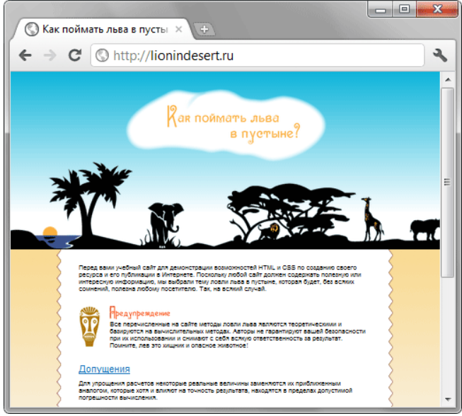
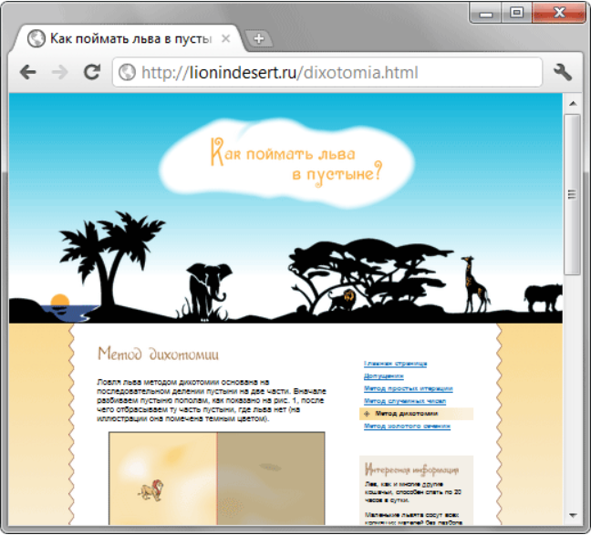

Ми згорнули дві сторінки сайту — головну та внутрішню, але це насправді не означає, що на сайті їх стільки ж. Це лише шаблони, які задають типовий вид документів. Далі шаблон використовується для CMS (content management system, система керування контентом), щоб автоматизувати процес створення нових сторінок на сайті. Тема CMS виходить за рамки цієї статті, тому сайт зроблений по-старому — за допомогою набору HTML-файлів. Остаточно сайт можна переглянути за адресою http://lionindesert.ru.
Зменшена головна сторінка сайту у браузері виглядає так
Головна сторінка сайту lionindesert.ru
Одна із внутрішніх сторінок
